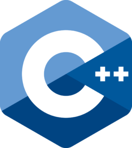
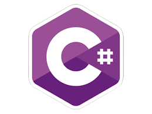
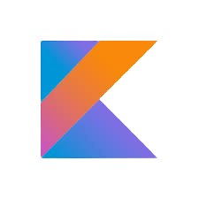
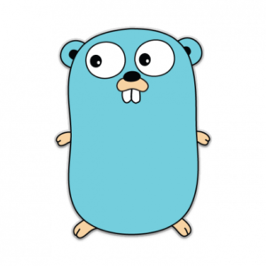

A list of programming languages that a beginner should know.
- Last Updated 25 July 2021

So first, what is programming?
If you never been to learn programming before, you might be wondering what programming actually is.
Well, when we write a program, we're giving the computer a series of commands that kinda look like a unnatural form of English.You can
think of a computer as a very obedient pet, listening to your every command, and doing whatever you tell it to.
So what's so cool about programming?
Well,it really depends on what you think it is cool. Because as it turns out, you can use programming for almost everything.
programs controls robots that can take care of patients,
programs help self-driving cars know which way to turn, which is pretty important!
programs help doctors cure diseases by processing huge amounts of medical data.
programs can be really fun games like, angry birds, minecraft.
programs make oit possible for pixar to put out awesome 3-D animated movies, and for movies like
Harry potter to have such cool special effects.
What's your favorite movie?
I bet that a computer helped make it somehow.
Programs are behind the website and the apps that we use everyday, all the time like Google maps, Youtube,
and of course, where you are now, Techsnap.
Here, on Techsnap, we'll provide you clean information about top 12 programming languages and path to learn and to master them.
Let’s start with the Languages that may probably Let you up in your Programming Career!

Python is a powerful multipurpose programming language created by Guido van Rossum.
It has simple and relatively straightforward syntax. Its syntax readability allows us to focus more on the problem
rather than structuring the code, making it a popular first-choice programming language for beginners.
Python is an interpreted, object-oriented, high-level programming language. As it is known for general-purpose, it can be
applied in wide range of applications from web development, building desktop GUI to scientific and mathematical computing.Python has numerous reliable built-in libraries.
Python developers have developed tons of free and open-source libraries, so we don't have to code everything by yourselves.
It is a widely used language for Machine Learning and Artificial Intelligence applications. Python is also used to develop 3D packages like
Blender, Inkscape, and Autodesk. It is extensively used in development of games like Civilization IV,
Vegas Trike, and Disney's Toontown as it has library like PySoy which provides 3D game engine support.
- Level : beginner – Python allows a beginner to become expert quickly
- Skills Needed : problem-solving, abstract thinking
- Degree of Use : widely used, popular in both technical education and business use
- Annual Salary Projection : $117,000
Java is a general purpose, class-based object oriented programming language created by James Gosling.
The Java programming language was developed by Sun Microsystems in the early 1990s. Although it is primarily used for Internet-based
applications, Java is a simple, efficient, general-purpose language. Java was originally designed for embedded network applications
running on multiple platforms. It is extremely portable, object-oriented, interpreted language.
Owned by the Oracle Corporation, this general-purpose programming language with its object-oriented structure has become a standard
for applications that can be used regardless of platform (e.g., Mac, Window, Android, iOS, etc.) since it has Write Once, Run Anywhere (WORA)
capabilities. Result of this capability, Java is recognized for its portability across platforms from mainframe data centers to smartphones.
Java is considered as one of the most used language for Android app development beacause of its compatible nature with Android Studio.
Also used in Big Data technologies, Scientific Applications, Enterprise Applications, Business Applications.And Java programmers are actively involved
in a variety of forums where they vet ideas or solve programming problems. Java has a vast community and gets a lot of support.
- Level : intermediate
- Skills Needed : problem-solving, basic knowledge of the Object-Oriented concepts
- Degree of Use : widely used, higly applicable
- Annual Salary Projection : $91,471

C is a procedural programming language created by Dennis Ritchie,
C++ is a mid-level Object-Oriented programming language created by Bjarne Stroustrup.
C was mainly developed as a system programming language to write an operating system.
The main features of the C language include low-level memory access, a simple set of keywords, and a clean style, these features
make C language suitable for system programmings like an operating system or compiler development. C is basically an old language,
as many later languages have acquired syntax,features directly or indirectly from the C language.
Like syntax of Java, PHP, JavaScript, and many other languages are mainly based on the C language. C language is well known for it's rich libraries.
C++ is a general-purpose programming language which was developed to enhance the C language to include object-oriented paradigm.
Rendering C++, the advantage of programming low-level (drivers, kernels) and even higher-level applications (games, GUI, desktop apps etc.)
Some of the Database softwares like MySQL, MangoDB, Postgres are written in C++. The greatest thing of C++ is, it has used in developing operating systems
like Apple, Microsoft's Windows and Internet Explorer too.
C and C++ developers can make use of compilers for a wide variety of platforms, making applications developed in these languages largely transportable.
Both C and C++ are considered as high-performance languages.
- Level : C - intermediate to advanced, C++ - beginner to intermediate
- Skills Needed : problem-solving, basic knowledge of the Object-Oriented concepts
- Degree of Use : both are most widely used languages
- Annual Salary Projection : $83,231
JavaScript is the programming language of the WEB created by Brendan Eich.
JavaScript is a cross-platform, object-oriented scripting language used to make webpages interactive
(e.g., having complex animations, clickable buttons, popup menus, etc.).
Along with HTML and CSS, JavaScript is one of the three core technologies of the World Wide Web.
There are also more advanced server side versions and web frameworks of JavaScript such as AngularJS, Node.js, and React.JS, which allow you to
add more functionality to a website than downloading files (such as realtime collaboration between multiple computers).
Inside a host environment (for example, a web browser), JavaScript can be connected to the objects of its environment to
provide programmatic control over them.
Pebble the smart watch maker has also created Pebble.js framework which supports to create it's own brand smart watches.
It is used at the front end of developing popular websites like Google, YouTube, Facebook, and Amazon.
- Level : intermediate
- Skills Needed : some familarity with HTML, CSS languages
- Degree of Use : one of the world’s most used language according to Github's 2020 Octoverse Report
- Annual Salary Projection : $84,000

Swift is a general-purpose programming language developed by Chris Lattner, with the eventual
collaboration of many other programmers at Apple.
Swift is a multi paradigm, object-oriented, functional, imperative and block structured language. Swift is the result of latest research
on programming languages developed by Apple Inc. especially for iOS application, macOS application,
watchOS application, tvOS application. An open-source programming language that is easy to learn and compatible with Apple and Linux platforms.
Swift supports almost everything from programming language Objective-C.It takes less coding compared to other programming languages.
Our most daily used applications like WhatsApp, Instagram, Linkedln, Facebook and many other popular applications are using SWIFT to develop more
compatible features for it's users.
- Popularity : not popular as other languages since it is iOS based language
- Level : beginner
- Skills Needed : Oject-Oriented languages like C++, Objective-C or JavaScript
- Degree of Use : widely used for development of iOS and Mac OS applications
- Annual Salary Projection : $84,423

C# is pronounced "C-Sharp".
C# is an Object-Oriented programming language developed by Anders Hejlsberg, a software engineer at Microsoft.
C# has roots from the C family, and the language is close to other popular languages like C++ and Java.
It is easy to learn and simple to use. It has a huge community support. C# is an object oriented language which gives a clear structure to programs
and allows code to be reused, lowering development costs. C# was created to build software applications for Windows and Mobile.
C# is widely used in game development and will continue to dominate. The C# features such as Automatic Garbage Collection, interfaces, object-oriented, etc.
make C# a popular game developing language.
C# integrates with Microsoft and thus can be used to build Microsoft Office.
C# is widely used for developing web applications and Desktop applications. It is one of the most popular languages that is used in professional desktop.
Any kind of cloud services can build by using C# such as Azure cloud applications and services, and also applied in Interoperability software like
SharePoint, SQL server and etc. .
What not? It is used in developing from Web applications to Desktop applications. Hence, it's important and worthy to learn C# language.
- Level : beginner to intermediate
- Skills Needed : basic understanding of C or C++ programming
- Degree of Use : traditionally popular within the desktop developer community
- Annual Salary Projection : $80,000

Ruby is a scripting language designed by Yukihiro Matsumoto in the mid 1990’s in Japan.
Ruby is a pure Object-Oriented language. Ruby is almost an Object-Oriented but the blocks however there are replacements for it i.e procs and lambda.
The objective of Ruby’s development was to make it act as a sensible buffer between human programmers and the underlying computing machinery. Ruby's syntax is similar to
of many the programming languages like C and Java, hence it is easy to learn Ruby for Java and C programmers.
It is based on other languages like Perl, Lisp, Smalltalk and Eiffel. Ruby has an elegant syntax i.e natural to read and easy to write.
A web-application framework that is implemented in Ruby is Ruby on Rails (RoR). These aspects have caused to a vast community of it's developers and a growing
interest for the language among developers.
Since it is similar to Python, it has also have various appliactions in this technological world such as E-Commerce, Prototyping. And developers may beholden to it's
library known as "Rails" for it's capability of supporting and providing ease to develop many WebApps such as GitHub, shopify, twitch, ConvertKit.
- Level : absolutely beginner
- Skills Needed : basic understanding of any programming languages
- Degree of Use : least broadly used
- Annual Salary Projection : $95,000
R is a programming language and free software developed by Ross Ihaka and Robert Gentleman.
This programming language was named R, based on the first letter of first name of the two R authors
(Robert Gentleman and Ross Ihaka).
R is the most popular language used for Statistical Computing and Data Analysis with the support of over 10, 000+ free packages in CRAN repository.
It has a specific syntax which is important to understand if you want to make use of its powerful features. R possesses an extensive catalog of statistical
and graphical methods. It includes machine learning algorithms, linear regression. Most of the R libraries are written in R, but for large computational tasks, C, C++, Fortran codes are adopted.
R is made up of a group of libraries designed specifically for data science and this is the main reason for it's widely used capability. It also allows a
wide range of tools to encapsulate the right model for our data.
R is the first choice in the healthcare industry, followed by government and consulting.
- Level : intermediate
- Skills Needed : basic understanding of any programming languages
- Degree of Use : most widely used for analyzing data and in data science field
- Annual Salary Projection : $80,149

Kotlin is an open-source statically typed programming language developed by JetBrains.
Kotlin is a statically typed, general-purpose programming language, that has created world-class IDEs such as IntelliJ IDEA,
PhpStorm, Appcode, etc. It was firstly initiated by JetBrains in 2011 and a new language for the JVM. Kotlin is object-oriented language,
and a “better language” than Java, but still be fully coherent with Java code. It is an Object-Oriented language which also has a lot of functional programming elements.
Kotlin Language identification is still in progress and has high exploratory steadiness level, means no affinity should be aniticipated between even
gradual releases, any functionality can be added, removed or manipulated without warning.
With the release of Android Studio 3.0, Google has supported Kotlin and declared Kotlin as an authoritative alternative to develop mobile Applications on Android.
Kotlin is also used for web development, server side applications,data science and much more! Our daily used Application Pinterest was built with Kotlin.
- Level : beginner
- Skills Needed : basic knowledge of java
- Degree of Use : most widely used for any kind of development
- Annual Salary Projection : $100,000
PHP is an open-source, interpreted scripting language created by Rasmus Lerdorf.
The term PHP is shor signifier for Hypertext Preprocessor.
PHP is a server-side scripting language designed specifically for web development since it's code is executed in server.
It is open-source which means it is free to download and use. It is very simple to learn and use. The files have the extension “.php”.
It has completely organized with a number of databases such as Oracle, Microsoft SQL, MySQL, PostgreSQL, Informix.
PHP asserts a large number of vital protocols like- POP3, IMAP, and LDAP. PHP4 affixed support for Java and distributed object
architectures such as COBRA, Java RMI, generating n-tier development a prospect for the first time.
It's syntax is similar with C.
It supports main protocols like HTTP Basic, HTTP Digest and others.
Websites like Facebook, Yahoo are built by using PHP. The main reason behind this is that PHP can be easily
implanted in HTML files and thier codes can also be written in a PHP file.
- Level : beginner to advanced
- Skills Needed : basic knowledge in HTML, CSS, JavaScript
- Degree of Use : mostly used for web development
- Annual Salary Projection : $69,000

Go is an open source compiled language designed by Rob Pike, Ken Thomson and Robert Griesemer.
Go also known as Golang is a procedural and statically-typed programming language having syntax similar to C language.
it comes with a powerful standard library as packages. Go has garbage collection, and dynamic-typing capability.
Go is the most vibrant and scalable programming language for creating web applications, web APIs,
micro-services, and other distributed services. It is one of the fastest-growing, highest-paying programming languages in America.
The main purpose of designing Golang was to eliminate the problems of existing languages.
Go can provide as Web server between computers and Databases. Golang is used in Big Data and Parallel Processing Applications.
- Level : beginner
- Skills Needed : must have a good command over C language
- Degree of Use : least boardly used
- Annual Salary Projection : $100,000
Scala is a modern multi-paradigm programming language designed by Martin Odersky.
Scala is a imperative, multi-paradigm programming language. It is a pure object-oriented programming language which also provides
the support to the functional programming approach.
Scala provides a lightweight syntax for defining anonymous functions and also it supports higher-order functions.
Scala contains the features of different languages like C#, Java etc. which makes the it more useful, scalable and productive than Java and C#
which only few people could realize and probably will seen as a future replacement to Java.
Replacement to Java says that all the applications with Java could also be applied with scala.
However the applications of Scala are way high such as Distributed Applications, Streaming Data, Analyzing Data with Spark and etc..
For the web applications it provides the support by compiling to JavaScript.
- Level : beginner to intermediate
- Skills Needed : basic understanding on Java, C, C++
- Degree of Use : highly applicable
- Annual Salary Projection : $79,000
How to Get Started :
However, there are hundreds of programming languages, but very few are on top that one should know inorder to be a good programmer.
The twelve programming languages outlined above are now apparently ruling the world of progrmming, in our opinion.
If you want to start a career as a programmer, make a innovative move into another field or advance up the career ladder at your current work.
Learning one of these languages is a brilliant kick start for your career in programming.
Since they range from "Python for beginners" to "Java for experienced", you can find the right one that fit for you and to meet your
requirements and needs.
GOOD LUCK!
Contact us :
Twitter
Facebook
Instagram
Github
Dribbble
Tumblr
Github
Dribbble
Tumblr